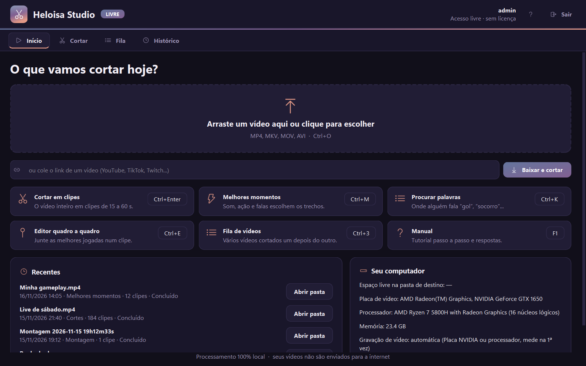
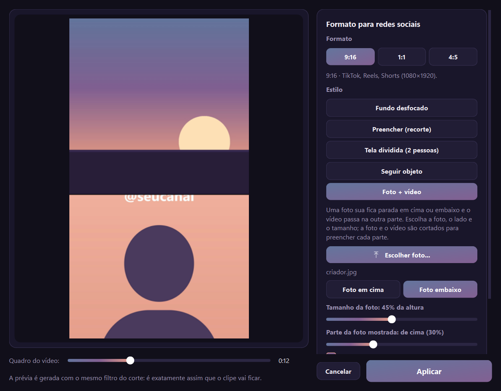
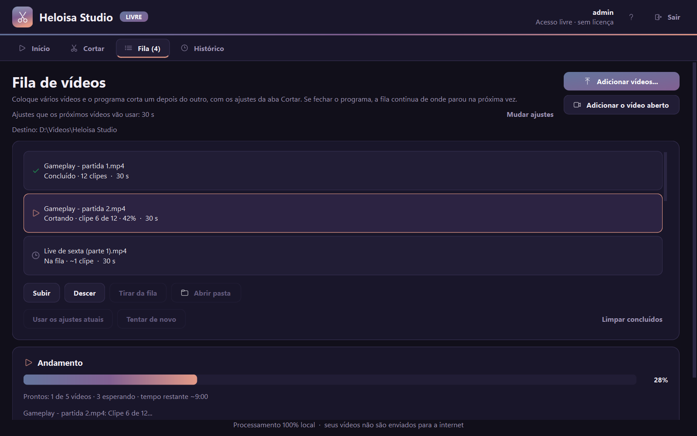
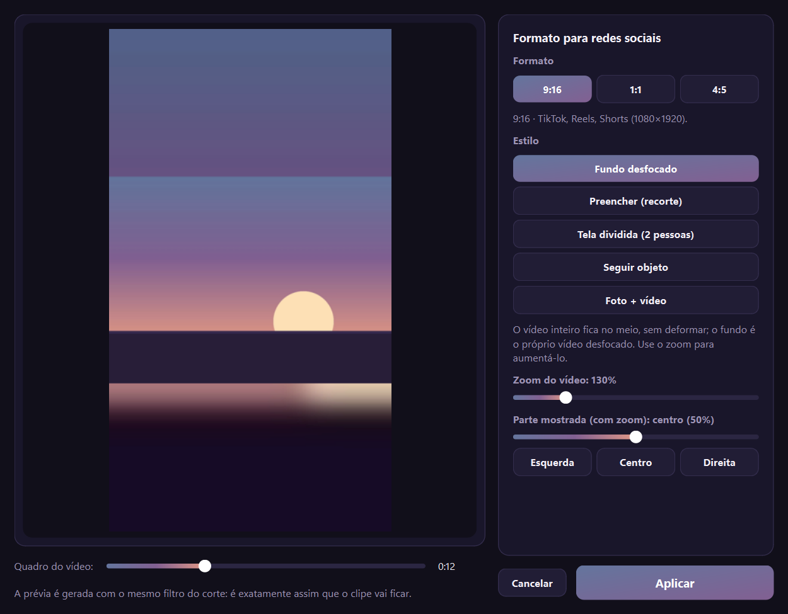

Corte automático
Divide o vídeo inteiro em clipes de 15 a 60 segundos, ou do tamanho que você escolher, numerados na ordem.
Grátis para Windows · sem licença
O Heloisa Studio corta vídeos longos em clipes curtos, acha os melhores momentos, coloca legenda e deixa tudo no formato certo. E faz isso no seu PC: seus vídeos não vão para a internet.

Do vídeo de horas aos clipes prontos para postar, sem precisar de outro editor.
Divide o vídeo inteiro em clipes de 15 a 60 segundos, ou do tamanho que você escolher, numerados na ordem.
Analisa som, ação e falas e sugere os trechos mais fortes. Você confere, ajusta e corta só o que quiser.
Legenda sincronizada com a fala, gravada no vídeo, em estilos como TikTok e Caixa. Também gera .srt e .vtt.
Formatos para TikTok, Reels, Shorts e feed, com fundo desfocado ou recorte, sem deformar a imagem.
Marque uma pessoa, um carro ou um personagem e o recorte acompanha pelo vídeo, suavemente.
Para podcasts e entrevistas: duas pessoas, uma em cima da outra, no mesmo clipe.
Uma foto sua parada em cima ou embaixo, do tamanho que você quiser, e o vídeo passando na outra parte.
Coloque vários vídeos e deixe cortando. Dá para pausar, e se o PC desligar, continua de onde parou.
Junte as melhores jogadas de um ou de vários vídeos num clipe só, com corte exato no quadro.
Seu logo ou o @ do canal em todos os clipes, na posição e no tamanho que você escolher.
Tudo é processado no seu computador. Nenhum vídeo é enviado, e as falas são ouvidas sem internet.
Escolhe sozinho entre o processador e a placa de vídeo (NVIDIA, AMD ou Intel), e usa os dois juntos quando é mais rápido.
Arraste a gameplay para a janela, ou cole o link de um vídeo seu. Dá para usar o vídeo inteiro ou só um trecho.
Duração dos clipes, formato (9:16, 1:1 ou 4:5), legenda, marca d'água. A Prévia de 10 s mostra como vai ficar.
Os clipes ficam prontos numa pasta, numerados e conferidos, com a legenda em .srt para subir junto.
Telas reais do Heloisa Studio.




Versão de teste para Windows 10 e 11 (64 bits). Não precisa de licença nem de cadastro.
Baixar o Heloisa StudioArquivo .zip de cerca de 450 MB · versão 2.0.0-beta.11
Para entrar no programa
Usuário admin · Senha admin
C:\HeloisaStudio.O programa ainda não tem assinatura digital, então o Windows pode mostrar um aviso na primeira vez. Baixe sempre por este site.
Sim. Esta versão de teste é gratuita, não precisa de licença e não tem prazo. Baixe, extraia e entre com o usuário e a senha da seção de download.
Não. Tudo é processado no seu computador: cortes, análise dos melhores momentos e legendas. A internet só é usada quando você mesmo cola o link de um vídeo para baixar.
Não para cortar. O reconhecimento de voz, usado nas legendas e nos melhores momentos, já vem junto do programa.
Por enquanto, só no Windows 10 e 11 (64 bits).
Não. Se o seu PC tiver uma placa NVIDIA, AMD ou Intel, o programa mede sozinho e usa a placa quando ela deixa o corte mais rápido.
Baixe apenas vídeos seus ou com autorização de quem criou. O programa foi feito para você reaproveitar o seu próprio conteúdo.
Numa pasta que você escolhe (por padrão, em Vídeos\Heloisa Studio), com uma pasta para cada vídeo. O vídeo original nunca é alterado.